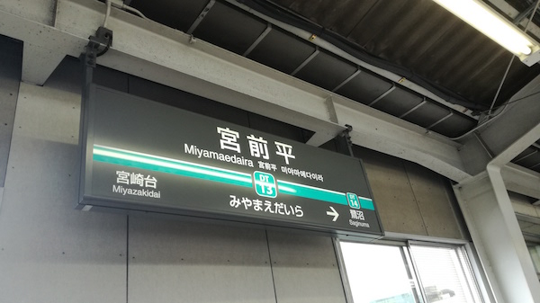
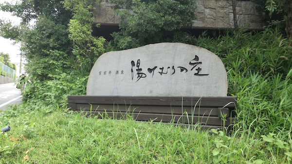
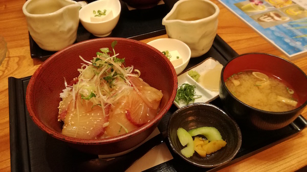
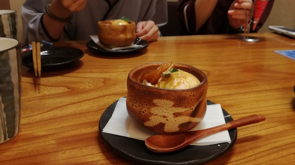

第二回風呂部活動
湯けむりの里
keyword:コーヒーゼリー
コーヒーゼリー度★★★★★★
赴いた日 7/23
川崎市宮前平の湯けむりの里に行きました。
部員の一人が間違えて前日に来ていたのに、当日は諸事情で来れなくなりました。ｱｰﾒﾝ
とりあえず残された部員で行きます。

めっちゃ坂。
駅から温泉までノンストップ坂
だがその先にオアシスがある。

湯けむりの里は、高級感あふれる施設でした。（No image）
特筆すべきは、
天然温泉
美人の湯？
まず天然温泉はいかにも肌によさそうなすべすべなお湯。
底がまったく見えない。色がついているからですね。
？？？「このお湯・・・コーヒーゼリーみたいじゃない？」
というわけで我々はあたたかいコーヒーゼリーにひたされたことになる。
もうひとつ、美人の湯？だっけ？
湯気が出ている温泉があった。
湯気の威力が強すぎて、「周りが見えない」レベルでした。
他にも「11:30からローリエを入れます」と言われ、サウナに入ったが入って5分ほどで我慢できず出ました。
出るとお姉さんに、「今からローリエを入れるので再入室できませんがよろしいですか？」と聞かれました。
まだローリエ入ってなかったんだと思いつつ、頷いて出ました。
入った意味。
温泉はこんな感じで、ここは岩盤浴も種類が豊富です。（No image）
6種類あり、一番の見所は「天」
「日本初の本格的なアトラクション形式の岩盤浴です。」（公式サイト http://yukemurinosato.com/miyamaedaira/ganbanyoku より）
行くしかない！！！！！！！
行った！！！！！！！！！
行きました。
あと、ごはん。メニューが豊富でした。
コーヒーゼリーもあり、心が揺れました。
しかし、三人ともかんぱち丼を頼みました。

おなかが超すいていたのもあって美味でした!!
冷たいお茶漬けにもできます、食べやすかったです！

豆腐アイスです！
とうふでした！
以上、湯けむりの里でした！